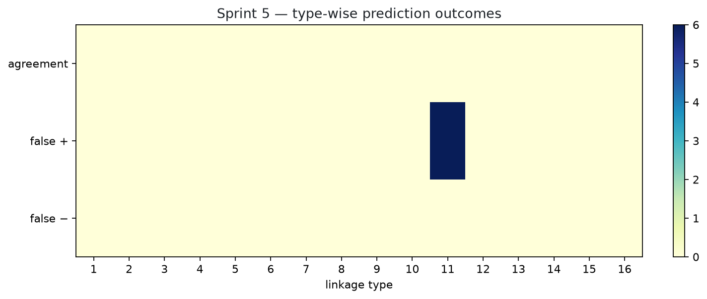
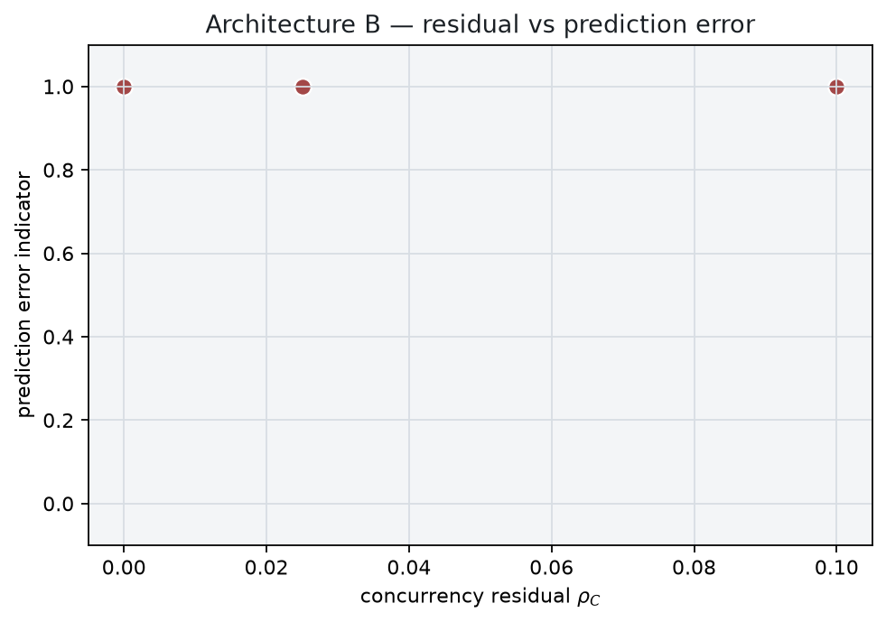
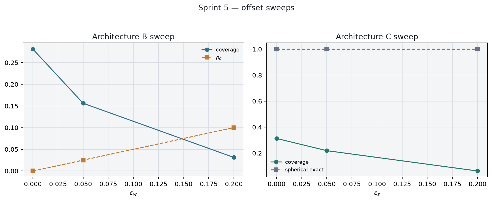
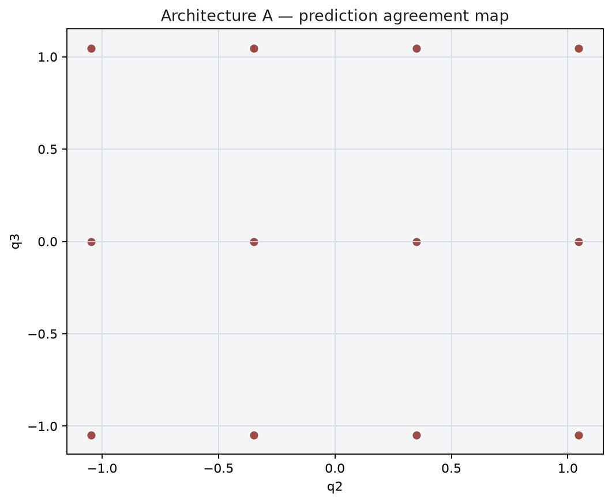

Compare McCarthy–Soh hand-crank predictions to numerical orientation labels across Architectures A/B/C. Exact and approximate reductions are never pooled without labels.
Product ≠ dexterity. Types {2,3,10,11} remain a hypothesis. Boundary Tᵢ≈0 states are excluded from ordinary error.



